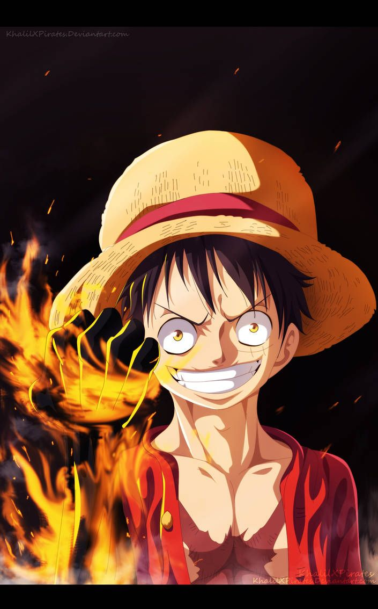

Monkey D. Luffy (モンキー・Ｄ・ルフィ, Monkī D. Rufi?), surnommé d'une manière récurrente Luffy au chapeau de paille (麦わらのルフィ, Mugiwara no Rufi?), est un personnage de fiction et principal protagoniste de la franchise japonaise One Piece créée par Eiichirō Oda. Il est intronisé en tant que garçon possédant une puissance élastique, une faculté qu'il a développée après avoir mangé un fruit du démon1. Il est le fondateur et le capitaine de l'Équipage de Chapeau de paille. Son rêve de toujours est de devenir le roi des pirates en trouvant le trésor légendaire, le One Piece, laissé par le défunt roi des pirates, Gol D. Roger. Selon lui, le roi des pirates est l'homme le plus libre du monde. Après ses actions sur Totto Land et contre l'Empereur Big Mom, il est actuellement considéré par la presse mondiale comme le 5e Empereur.
Il est le fils du chef de l'armée révolutionnaire, Monkey D. Dragon, ainsi que le petit-fils paternel du héros de la Marine, Monkey D. Garp. Il est aussi le frère de l'ancien capitaine de la 2e flotte de l'équipage de Barbe Blanche, le défunt Portgas D. Ace, et du chef d'état-major de l'armée révolutionnaire, Sabo.
Luffy est mondialement connu dans le monde de One Piece en tant que fauteur de troubles, comme lorsqu'il défie les Grands Corsaires, la Marine et les Quatre Empereurs, et lorsqu'il commet des actions jugées menaçantes par le Gouvernement mondial. En outre, dans la majorité de ces combats, il en est sorti vainqueur. Il a également acquis la réputation d'être «imprudent» et, dans certains cas, «fou», comme lors de l'incident à Enies Lobby, son attaque sur un dragon céleste sur l'archipel des Sabaody, l'incident d'Impel Down et sa participation à la bataille de Marine Ford. Il est donc tristement célèbre pour être le seul pirate connu à non seulement délibérément attaquer les trois installations gouvernementales les plus importantes, mais aussi à réussir à s'échapper vivant en y affrontant des adversaires incroyablement puissants. Le fait qu'il ait frappé un dragon céleste en connaissance de cause et la portée de son héritage a valu à Luffy d'être qualifié d'élément futur dangereux par le Gouvernement mondial et l'amiral-en-chef Sakazuki.
voix japonaise: Mayumi Tanaka
voix francaise: Stéphane Excoffie
fruit du demon : Gomu Gomu no Mi
prime : 1,5 milliards berrys
